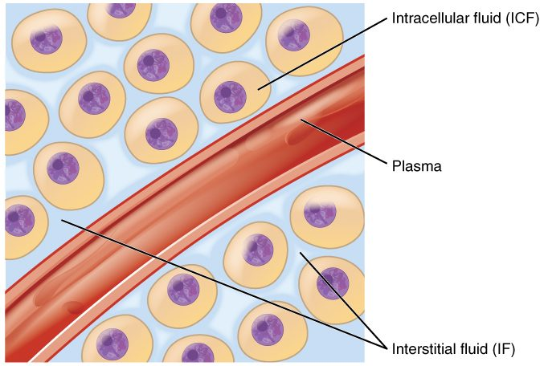

Body fluid compartments and water balance
Total body water is about 60% of body mass in a young man, less in women, older adults and people with obesity, and about 75% in infants.
Part 1 · Clinical hook
Why this matters
Mr. Okoye, 84, lives alone. During a heat wave he stops drinking much because he rarely feels thirsty, and after three days his daughter finds him confused. His plasma osmolality is 312 mOsm/kg. Water has been leaving his brain cells, following the solute in his concentrated plasma. To understand why he became confused, and why giving him water too fast could also harm him, you need to know where your body's water sits and how you keep it balanced.
Part 2 · Foundations
What this builds on
Part 3 · Prerequisite check
Quick check before you start
1. A red blood cell is placed in a solution with more nonpenetrating solute than the cell holds. What happens?
- Water enters the cell and it swells
- Water leaves the cell and it shrinks
- Nothing, because water cannot cross the membrane
Show the answer
The solution is hypertonic. Water follows the solute the membrane holds back, so it leaves the cell, which shrinks (crenation).
- Water enters the cell and it swells:
- Correct: Water leaves the cell and it shrinks:
- Nothing, because water cannot cross the membrane:
2. What does ADH do in the collecting duct?
- It makes principal cells insert aquaporins, so water is reabsorbed
- It makes principal cells pump sodium out of the urine
- It makes the collecting duct secrete water into the urine
Show the answer
ADH binds its receptor protein on principal cells and triggers the insertion of aquaporins into the apical membrane, so water leaves the duct into the salty medulla and returns to the blood.
- Correct: It makes principal cells insert aquaporins, so water is reabsorbed:
- It makes principal cells pump sodium out of the urine:
- It makes the collecting duct secrete water into the urine:
3. Where are the osmoreceptors that control thirst and ADH release?
- In the carotid sinus
- In the collecting ducts of the kidney
- In the hypothalamus
Show the answer
Osmoreceptors are neurons in the front of the hypothalamus. They shrink and fire faster when plasma osmolality rises, which triggers thirst and ADH release.
- In the carotid sinus:
- In the collecting ducts of the kidney:
- Correct: In the hypothalamus:
Part 4 · Anatomy panel
Anatomy

With labels hidden, select a box to reveal its label.
Part 5 · Causal chain
How it works, step by step
- You sweat heavily on a hot day and do not drink, losing more water than salt.Your plasma osmolality rises above its set point of about 285 to 290 mOsm/kg.
- The more concentrated plasma draws water out of hypothalamic osmoreceptors.The osmoreceptors shrink and fire faster.
- Faster firing of the osmoreceptors drives the hypothalamus.The posterior pituitary releases more ADH, and the thirst center makes you want to drink.
- ADH makes principal cells of the collecting ducts insert aquaporins, and you drink.Your kidneys return more water to the blood, your urine becomes small in volume and concentrated, and water enters from your gut.
- Water is added to the plasma from both routes.Plasma osmolality falls back toward its set point, the osmoreceptors fire less, and ADH and thirst switch off: negative feedback.
Part 6 · Key ideas
Key ideas
- Total body water is all the water in your body, inside cells and out: about 60% of body mass in a young adult man. Two thirds of it is intracellular fluid and one third is extracellular fluid.
- Metabolic water is water your cells make in the last step of cellular respiration, when oxygen picks up hydrogen ions and becomes water. It adds about 0.25 L a day to the water you drink and eat.
- Hypovolemia (hypo- = under, vol- = volume, -emia = blood condition) is a fall in extracellular fluid volume from losing salt and water together, as in bleeding or diarrhea. Plasma osmolality stays normal, so no water leaves your cells, but blood pressure tends to fall.
- Water intoxication is the symptomatic result of overhydration, a gain of water greater than the gain of solute. Plasma osmolality falls and water enters your cells, so they swell.
Part 7 · Core concept
Core concepts
Part 8 · Misconception
A common mistake
The wrong idea: Dehydration and hypovolemia are the same thing: both just mean you have lost fluid.
What actually happens: They differ in what is lost. Hypovolemia is a loss of salt and water together, as in bleeding or diarrhea: plasma osmolality stays normal, only the extracellular fluid shrinks, and the main danger is low blood pressure. Dehydration in the strict sense is a loss of more water than solute, as in not drinking or sweating: plasma osmolality rises, water leaves cells, and brain cells shrink. The first needs salt and water replaced; the second needs water.
Part 9 · Retrieval check
Check yourself
Anything you miss goes into your review queue.
1. An 80 kg man's total body water is 60% of his body mass. About how much of it is intracellular fluid?
- 16 L
- 48 L
- 32 L
- 24 L
Show the answer
Total body water = 0.60 × 80 kg = 48 L. Intracellular fluid is about two thirds of that: 48 × 2/3 = 32 L.
- 16 L: 16 L is one third of 48 L, which is the extracellular fluid, not the intracellular fluid.
- 48 L: 48 L is his total body water. Only part of it is inside cells.
- Correct: 32 L: Correct. Two thirds of 48 L is 32 L.
- 24 L: 24 L is half of 48 L. The intracellular share is two thirds, not half.
2. In one day, a woman drinks 1.2 L, gets 0.8 L from food and makes 0.3 L of metabolic water. She passes 1.4 L of urine, loses 0.8 L insensibly, 0.2 L in sweat and 0.1 L in feces. What is her water balance for the day?
- She loses 0.5 L
- She is in balance
- She gains 0.2 L
- She loses 0.2 L
Show the answer
Intake = 1.2 + 0.8 + 0.3 = 2.3 L. Output = 1.4 + 0.8 + 0.2 + 0.1 = 2.5 L. Balance = 2.3 − 2.5 = −0.2 L, a loss of 0.2 L.
- She loses 0.5 L: A loss of 0.5 L comes from leaving out the 0.3 L of metabolic water, which is a real gain made inside cells.
- She is in balance: Intake and output do not match here: 2.3 L in and 2.5 L out.
- She gains 0.2 L: This reverses the sign. Output is larger than intake, so she loses water.
- Correct: She loses 0.2 L: Correct. 2.3 L in, 2.5 L out: a loss of 0.2 L.
3. A healthy man drinks 2 L of plain water in 15 minutes. Predict the change in each variable over the next hour, compared with before he drank.
| Variable | Change |
|---|---|
| Plasma osmolality | — |
| Intracellular fluid volume | — |
| ADH release | — |
| Water permeability of the collecting ducts | — |
| Urine volume | — |
| Urine osmolality | — |
| Total amount of sodium in the body | — |
| Total amount of potassium in the body | — |
Show the answer
Pure water dilutes every compartment and enters cells. The fall in plasma osmolality shuts off ADH through the osmoreceptors, the collecting ducts lose their aquaporins, and a large volume of dilute urine removes the extra water over the next few hours.
- Plasma osmolality: down. The water is absorbed and adds no solute, so the same solute is spread through more water.
- Intracellular fluid volume: up. The more dilute extracellular fluid is hypotonic to cells, so water moves into them until osmolality is equal again.
- ADH release: down. Hypothalamic osmoreceptors swell and fire less when plasma osmolality falls, so the posterior pituitary releases less ADH.
- Water permeability of the collecting ducts: down. With little ADH, principal cells pull their aquaporins back into vesicles, so the ducts become nearly waterproof.
- Urine volume: up. Water stays in the collecting ducts instead of being reabsorbed, so much more urine is made.
- Urine osmolality: down. The dilute fluid leaving the loop is not concentrated further in the collecting duct, so urine can fall toward 50 mOsm/L.
- Total amount of sodium in the body: no change. Plain water adds no sodium. The concentration falls, but the amount is the same over the hour.
- Total amount of potassium in the body: no change. Plain water adds no potassium, and an hour of dilute urine removes little.
4. Mr. Okoye, 84, has drunk very little during a three-day heat wave. His plasma osmolality is 312 mOsm/kg and he is confused. What is happening to his brain cells?
- They swell, because water moves into them
- They shrink, because water moves out of them
- They keep their size, because only his plasma volume has changed
- They keep their size, because the blood–brain barrier stops water moving
Show the answer
He has lost more water than solute, so his ECF is more concentrated than his cells. Water follows the solute out of the cells, and they shrink. Shrinking brain cells cause his confusion.
- They swell, because water moves into them: Cells swell when the ECF becomes more dilute, as in water intoxication. His plasma is concentrated, so water leaves cells.
- Correct: They shrink, because water moves out of them: Correct. Hypertonic ECF draws water out of cells, including neurons.
- They keep their size, because only his plasma volume has changed: Cells keep their size only when a loss is isotonic, as in bleeding. His plasma is concentrated with sodium, which stays outside cells, so water leaves them.
- They keep their size, because the blood–brain barrier stops water moving: The blood–brain barrier restricts many solutes, but water crosses it and brain cell membranes, so brain cells respond to plasma osmolality.
5. A child loses 1 L of fluid in diarrhea over a day. The fluid has about the same osmolality as her plasma, and she has not drunk anything. Which pattern do you expect?
- Plasma osmolality rises and her cells shrink
- Plasma osmolality falls and her cells swell
- Both compartments shrink equally, in proportion to their size
- ECF volume falls, plasma osmolality stays normal and cells keep their size
Show the answer
An isotonic loss removes salt and water together from the ECF. Osmolality does not change, so no water moves across plasma membranes. Only the ECF shrinks: this is hypovolemia.
- Plasma osmolality rises and her cells shrink: That is the pattern of losing more water than solute. An isotonic loss leaves osmolality unchanged.
- Plasma osmolality falls and her cells swell: Osmolality falls only when water is gained or solute is lost in excess of water.
- Both compartments shrink equally, in proportion to their size: Losses spread across all compartments only when pure water is lost. Water moves into or out of cells only when ECF osmolality changes.
- Correct: ECF volume falls, plasma osmolality stays normal and cells keep their size: Correct. Isotonic loss shrinks the ECF alone. (If she drank plain water to replace it, her plasma would become dilute.)
6. A man with a lung tumor that secretes ADH has a plasma osmolality of 255 mOsm/kg and concentrated urine. He develops headache and confusion. Which fluid imbalance does he have, and why is his brain affected?
- Dehydration: his brain cells shrink as water leaves them
- Hypovolemia: his blood pressure is too low to supply the brain
- Overhydration: his brain cells swell as water enters them
- Hypervolemia: fluid leaks from his capillaries into the brain
Show the answer
Constant ADH (SIADH) makes his kidneys keep water although his plasma is dilute. He has gained water in excess of solute, so ECF osmolality falls, water moves into cells, and swelling brain cells inside the rigid skull cause headache and confusion.
- Dehydration: his brain cells shrink as water leaves them: Dehydration raises plasma osmolality. His is low, at 255.
- Hypovolemia: his blood pressure is too low to supply the brain: Hypovolemia is an isotonic loss with normal osmolality. His osmolality is low and he is keeping water, not losing it.
- Correct: Overhydration: his brain cells swell as water enters them: Correct. Water gain lowers osmolality and swells cells; the brain has no room to swell.
- Hypervolemia: fluid leaks from his capillaries into the brain: Hypervolemia is an isotonic gain with normal osmolality, and it causes edema by raising capillary pressure. His problem is dilute plasma.
7. A runner sweats 2 L during a long race in the heat and drinks nothing. Sweat contains less salt than plasma. Predict each variable at the end of the race, compared with the start.
| Variable | Change |
|---|---|
| Plasma osmolality | — |
| Intracellular fluid volume | — |
| ADH release | — |
| Urine volume | — |
| Renin release | — |
| Thirst | — |
| Glucose in the urine | — |
Show the answer
Losing dilute sweat raises plasma osmolality and lowers ECF volume. Water leaves cells, and both the osmolality and volume triggers raise ADH, renin and thirst. The kidneys save water, but only drinking can replace the 2 L lost.
- Plasma osmolality: up. Sweat is more dilute than plasma, so she loses more water than solute and her plasma becomes more concentrated.
- Intracellular fluid volume: down. The more concentrated ECF draws water out of cells, so they shrink.
- ADH release: up. Osmoreceptors shrink and fire faster, and the fall in blood volume adds a second push for ADH release.
- Urine volume: down. ADH inserts aquaporins in the collecting ducts, so more water is reabsorbed and little urine is made.
- Renin release: up. Plasma volume falls, so pressure in the kidney's small arteries falls and sympathetic activity rises, both of which increase renin release.
- Thirst: up. The rise in osmolality acts on the osmoreceptors, and angiotensin II from the RAAS adds to it, stimulating the thirst center.
- Glucose in the urine: no change. Dehydration does not overwhelm the glucose carriers, so the urine stays free of glucose.
Part 10 · Summary
Summary
Total body water is about 60% of body mass in a young man, less in women, older adults and people with obesity, and about 75% in infants. Two thirds of it is intracellular fluid; one third is extracellular fluid, of which three quarters is interstitial fluid and one quarter is plasma. Plasma membranes separate ICF from ECF and keep their ions different: potassium inside, sodium outside. Water crosses freely, so every compartment has the same osmolality. Water intake (drinks, food, metabolic water) matches output (urine, insensible loss, sweat, feces), and only thirst and urine volume are adjusted to match it. The plasma osmolarity feedback loop, from hypothalamic osmoreceptors through ADH and thirst, holds plasma osmolality near 285 to 290 mOsm/kg. Isotonic losses and gains change only the ECF (hypovolemia, hypervolemia); losing or gaining water changes osmolality and moves water into or out of cells (dehydration, overhydration and water intoxication).
Part 11 · Up next
What comes next
Part 12 · Connections